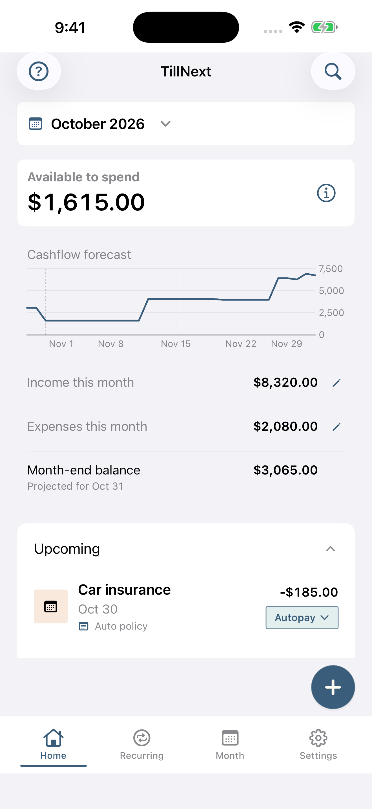
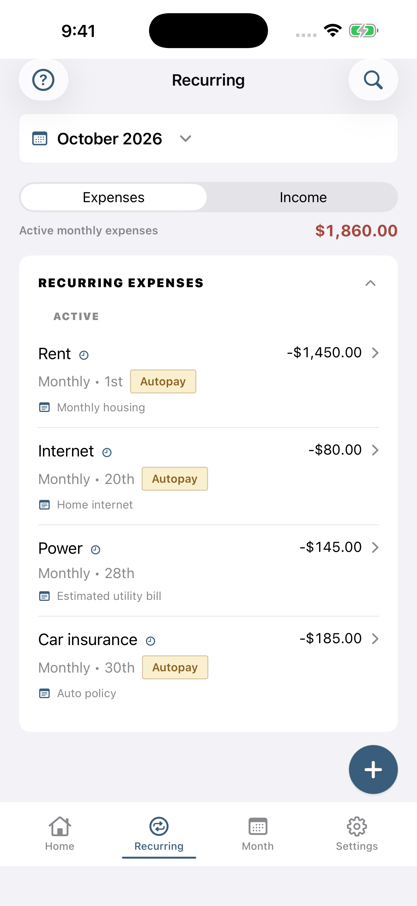
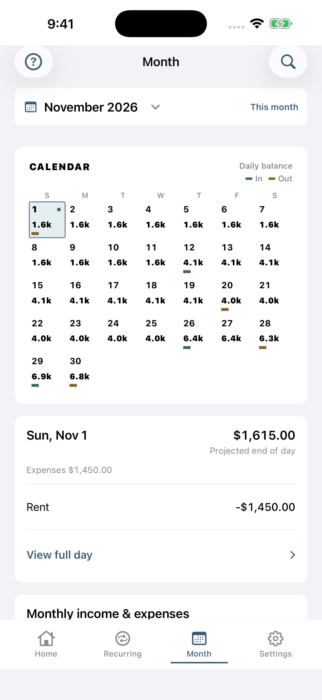
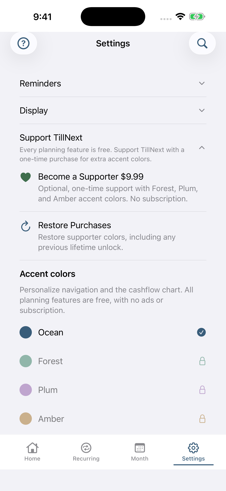

Guide for TillNext 2.0 · Release in preparation
A little help with your plan.
Start with your bank balance, then add what comes in and what goes out.
Home
Available to spend shows what is available after holding money for planned bills. Once you have a bank balance and planned activity, the Cashflow forecast chart appears beneath it. Then come Income this month, Expenses this month, and the projected Month-end balance, followed by Upcoming and Completed.
- Enter the balance you have in your bank account now.
- Add your income and expenses with the floating + button above the tabs.
- Update items as money arrives or leaves your bank.
Tap the information button beside Available to spend to open Cash outlook. This sheet explains the next paycheck, income and expenses still to come, and money held for planned bills.
Expected income is part of the forecast. Update its status when it arrives; TillNext does not check your bank for deposits.
Use the month control to plan another month. Tap This month in the month header to return to the current month. Your current bank balance and a future month's projected balance describe different points in time.

Recurring
Add income and bills that repeat. TillNext places their occurrences into the plan so you do not need to count them each month.
- Use the floating + button to add a recurring income or expense.
- Choose an amount, start date, and schedule.
- Move the month control to inspect a future occurrence.
- Open an occurrence to change its amount or status for that month.
- Use the clock action to review earlier occurrences.
A paycheck arrived early
Find the scheduled paycheck in its planned month and mark that occurrence Received once the money is in your bank. Update the existing occurrence rather than adding a second one-time income for the same paycheck.
Review the amount and status yourself, including whether deposits and payments have cleared. If you need to reconcile the plan, enter the balance actually shown by your bank using the information button on Home.

Month
The calendar shows when income and expenses change your cash balance. Tap a day to inspect its items and projected balance.
Move forward to plan a future month or back to review earlier activity. The forecast uses your saved bank balance, scheduled items, and the statuses you enter. Keep these up to date as your actual payments and deposits change.
Use this view when a month-end total looks fine but you want to check whether cash could run short before payday.

Settings
Keep display preferences, reminders, your local data, and optional supporter colors in one place.
- Use a CSV export for a readable copy of your plan.
- Save a manual backup, or opt into automatic daily iCloud Drive backups.
- Restore from a CSV or backup file you choose. Restoring replaces the planning data on this device.
- Use local reset only when you want to remove this device's TillNext planning data.
- Choose supporter colors or restore an earlier lifetime purchase under Support TillNext.
The app supports light and dark mode. Planning features remain free in both.

Common questions
What is the difference between Available to spend and the month-end balance?
Available to spend holds back money needed for planned bills. The month-end balance is a forecast that includes expected income and expenses through the date shown. Future income is not cash already in your bank.
How do I add a one-time expense?
Tap the floating + button on Home and choose a one-time entry. Enter the amount and date, then save. This is useful for things like groceries, fuel, or an occasional repair.
Does Autopay pay my bills?
No. Autopay is a reminder that a bill is paid automatically elsewhere. TillNext does not move money or make payments.
Does TillNext connect to my bank or require an account?
No. TillNext is a manual, local-first planner with no account, bank connections, ads, analytics, or tracking.
Where is my data stored?
Planning data is saved locally on your iPhone. You can choose to export it or save backups in your own iCloud Drive. TillNext does not send your plan to a developer-operated server.
Is there still a trial or lifetime unlock?
Version 2.1 makes all planning features free. Optional one-time support adds accent colors. Earlier lifetime purchases include these colors. See pricing for details.
Can I use light and dark mode?
Yes. TillNext supports both with the same planning controls and information.
What devices are supported?
TillNext is built for iPhone and requires iOS 17 or later.
How do Home Screen widgets work?
Add a TillNext widget from your iPhone's widget gallery to see a summary of your plan. Open the app to review the full plan and update your bank balance or item statuses.
Still need a hand? Contact support.